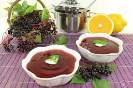

Odin's Elderberry Soup

Description
Desiring something sweet and divine?
Odin's Edlerberry soup is just the thing you need! It can be served hot or cold on a fine summer evening!
Ingredients - 4 servings
- 5 ounces elderberries
- 1 quart water, divided
- 1 ½ teaspoons cornstarch
- ½ pound apples - peeled, cored and diced
- 1 lemon peel
- white sugar to taste
Steps
- Place the elderberries in a pot with 2 cups water, and bring to a boil. Reduce heat to low, and simmer 10 minutes. Remove from heat, puree in a blender until smooth, and return to the pot. In a small bowl, mix the cornstarch with 1 tablespoon of the puree, and stir into the pot to thicken.
- In a separate pot, bring the apples and remaining water to a boil. Place the lemon peel in the pot. Reduce heat to low, and simmer 10 minutes. Remove peel. Mix the elderberry puree into the apple mixture, and sweeten to taste with sugar.
Skald! Now that's a nectar from the Halls of Odin!